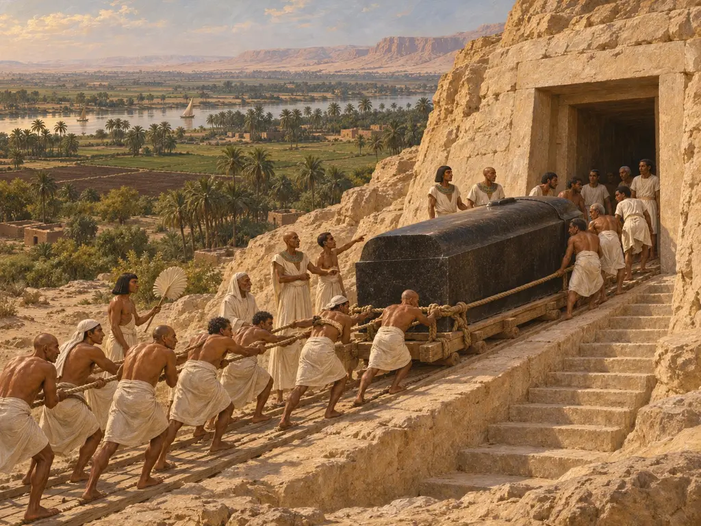
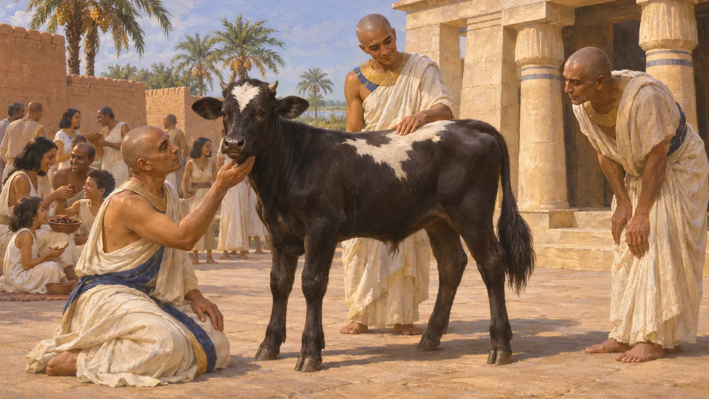
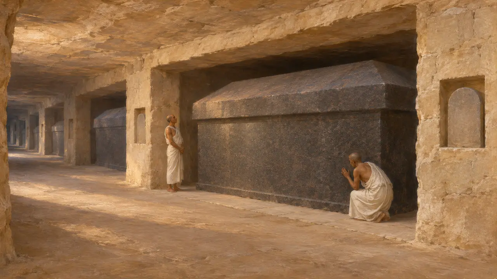
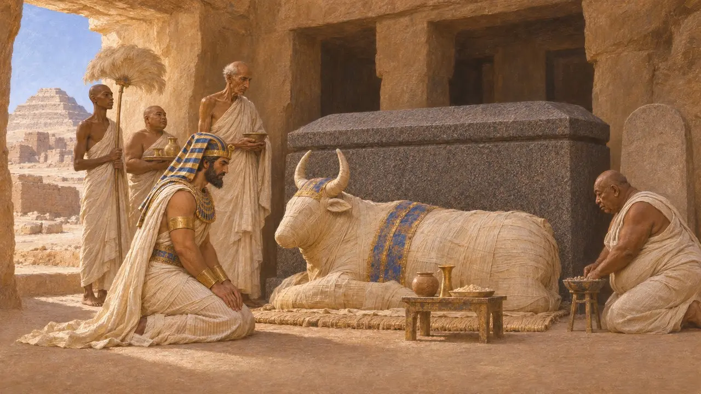
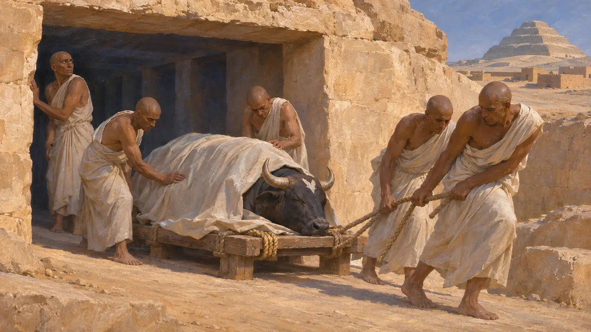
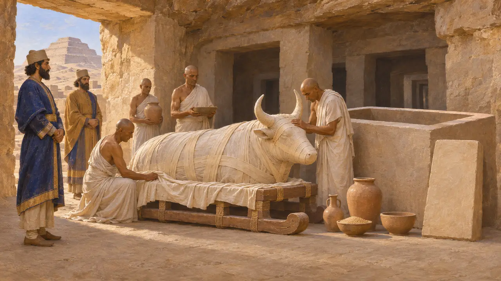

Bestattung des Apis
In den Fels gehauene Grabgalerien der heiligen Apis-Stiere in Sakkara, Ägypten; Bestattung von 524 v. Chr.
Im Spiel: Level 2: Der Lanzenträger
Der Apis war ein lebender Stier, der in Memphis gehalten und als Herold des Gottes Ptah verehrt wurde. Starb er, wurde er einbalsamiert und in einem steinernen Sarkophag in Galerien beigesetzt, die in Sakkara in den Wüstenrand gehauen waren und seit ptolemäischer Zeit als Serapeum bekannt sind. Unter Kambyses wurde 524 v. Chr. ein Apis bestattet, und die ägyptische Überlieferung dieser Bestattung lässt an der griechischen Geschichte zweifeln, der Perserkönig habe den Gott getötet.
Im Spiel: Die Gruft entsteht in Bauabschnitten aus Kalkstein, Granit aus Elephantine und Holz für Schlitten und Rollen. In Wirklichkeit war jeder Sarkophag ein einziger Granitkasten mit eigenem Deckel, kein Satz aus Einzelteilen.

Ein lebender Gott in Memphis
Antiker BerichtHerodot berichtet, der Apis sei ein Kalb, das von einer Kuh geboren werde, die danach kein weiteres mehr empfangen könne. Die Priester erkannten es, so sagt er, an seinen Zeichen: schwarzes Fell, ein weißer Fleck auf der Stirn, eine adlerähnliche Gestalt auf dem Rücken, doppelte Schwanzhaare und ein käferförmiges Mal unter der Zunge. Sein Erscheinen löste in Ägypten öffentliche Festlichkeiten aus, und er vermerkt, dass die Griechen ihn Epaphos nannten.
Herodotus 3.27-28

Die Galerien von Sakkara
Zeitgenössisch belegtAuguste Mariette legte die Grabgewölbe 1850 und 1851 frei. Die älteren Kleinen Gewölbe reichen bis in die Regierungszeit Ramses' II. zurück, während die Großen Gewölbe unter Psammetich I. im 7. Jahrhundert begonnen wurden. Lange Gänge öffnen sich zu Seitenkammern, von denen viele Sarkophage aus Granit und anderem Hartgestein bergen, die viele Tonnen wiegen. Hunderte von Stelen, die Priester und Besucher hinterließen, verzeichnen Bestattungen und Daten.
A. Mariette, Le Sérapéum de Memphis, 1857

Die Bestattung von 524 v. Chr. unter Kambyses
Zeitgenössisch belegtEine Stele aus den Grabgewölben verzeichnet die Bestattung eines Apis im 6. Regierungsjahr des Kambyses, also 524 v. Chr., und zeigt den König als Pharao kniend vor dem Stier. Ein Granitsarkophag trägt eine Inschrift, die Kambyses als denjenigen nennt, der ihn für den Gott anfertigen ließ. Diese Texte stellen den persischen Herrscher als frommen ägyptischen König dar, der die gebührenden Riten vollzieht.
G. Posener, La première domination perse en Égypte, 1936

Herodot und der verwundete Stier
Antiker BerichtHerodot berichtet, Kambyses habe bei seiner Rückkehr von einem gescheiterten Feldzug gegen die Äthiopier Memphis beim Fest für einen neuen Apis vorgefunden und darin Spott über seine Niederlage gesehen. Der König habe die Priester auspeitschen lassen und den Stier in den Schenkel gestochen; dieser sei dahingesiecht und von den Priestern heimlich bestattet worden. Die Ägypter, so berichtet er, hätten gesagt, dieser Frevel habe Kambyses in den Wahnsinn getrieben.
Herodotus 3.27-30

Die beiden Fassungen in Einklang bringen
UmstrittenDie meisten Historiker meinen, dass Stele und Sarkophag gegen die Tötung sprechen, da der Stier von 524 v. Chr. mit königlichen Ehren bestattet wurde. Manche vermuteten, der verwundete Stier sei sein Nachfolger gewesen, doch dieser Apis, unter Kambyses geboren, lebte bis ins 4. Jahr des Dareios, 518 v. Chr. Viele sehen in der Erzählung eine feindselige Erinnerung der Priester, vielleicht verschärft durch Kambyses' Kürzungen der Tempeleinkünfte, die ein späterer demotischer Text festhält.
P. Briant, From Cyrus to Alexander, 2002
Quellen
- Herodotus 3.27-30
- G. Posener, La première domination perse en Égypte, 1936
- A. Mariette, Le Sérapéum de Memphis, 1857
- P. Briant, From Cyrus to Alexander, 2002
- A. Kuhrt, The Persian Empire: A Corpus of Sources from the Achaemenid Period, 2007